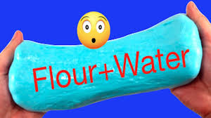
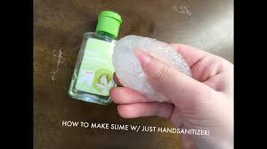

Top 6 ways to make slime without glue

1.Take half cup shampoo then add food coloring and then a pinch of salt mix both the ingredients and keep in fridge for 20 min
Our slime is ready

2. In a bowl add half cup water add food coloring then add flour and keep mixing and adding flour until like dough
Our clay slime is ready

3. Take some marshmallows and melt them in microvawe for 1 min then add food coloring and then keep adding the powder sugar into the marshmallow until slime is ready
Our slime is ready

4. Add half cup dish soap in a bowl and food coloring and then add half a teaspoon of sugar mix well then keep in it in the fridge for 1 hour
Our slime is ready

5. Take some lemon juice with some dish soap pop it in the microvawe until thick and clear
Our slime is ready

6. Take any sanitizer which contains aloe vera in it and add few tablespoons of glycerine pop it in the fridge for 1 day
Our slime is ready

Thank You so much make sure to subscribe to my chnnel Just Slime It